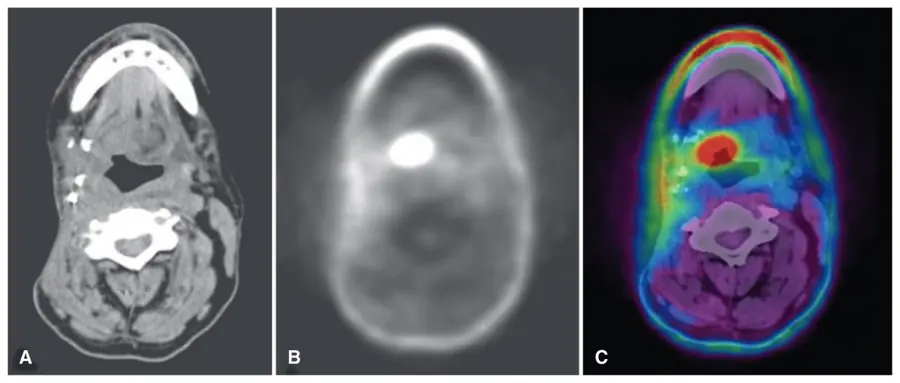

نسخه استخراجشده؛ ترجمه یا تأیید علمی انجام نشده است. وضعیت: captured
قدم 1 · theory
جمعبندی MRI، پزشکی هستهای و سونوگرافی
بلوک ۱ — فیزیک MRI
NMR: ذرهی باردار متحرک ← میدان مغناطیسی، هستهی با اسپین غیرصفر در میدان ← تقدیم، فرکانس تقدیم متناسب با چگالی شار، موج رادیویی همفرکانس ← جذب انرژی، و اگر فرکانس حتی اندکی فرق کند، هیچ جذبی نیست.
تاریخ: بلاخ و پرسل ۱۹۴۶ (نوبل ۱۹۵۲)، دامادیان ۱۹۷۱ (آسایش تومور ≠ بافت طبیعی)، لاتربر ۱۹۷۳ (گرادیان)، منسفیلد (انتخاب برش)، ارنست (فوریهی دوبعدی)، جز دامادیان، سه نفر نوبل گرفتند.
سیگنال با القای فارادی در سیمپیچ گیرنده؛ بزرگیاش متناسب با چگالی پروتون.
بلوک ۲ — تصویر MRI
کنتراست از T1، T2، تحرک و شمار پروتون، و انتشار، انواع: T1، T2، چگالی پروتون، DWI.
TR و TE در صورت، T1 و T2 در مخرج، T1-وزنی = TR کوتاه + TE کوتاه، T1 کوتاه ← سیگنال قوی (چربی روشن).
FSE T2: چربی هم روشن، SE T2: تنها آب روشن.
سرکوب چربی: CHESS (جابهجایی شیمیایی ۳٫۵ ppm = ۲۲۴ Hz در ۱٫۵T)، دیکسون (همفاز ۴٫۵ و ۹ ms، خلاففاز ۲٫۲۵ و ۶٫۷۵ ms؛ زمان دو برابر)، STIR (وارونگی ۱۸۰°، TI کمتر از ۲۰۰ ms، نقطهی صفر چربی؛ TI بلندتر ← FLAIR برای سرکوب آب).
گادولینیوم پارامغناطیس ← T1 را کوتاه ← روشنتر در T1، تجمع در بافت پرعروق، تومور بدخیم و التهاب تقویت میشوند.
مزیت: بدون پرتو یونساز، کنتراست بافت نرم بالا، هر صفحه، چند ترکیب کنتراستی، MRA، MRS، fMRI. محدودیت: زمان طولانی، کلاستروفوبیا، فرومغناطیس، دستگاه الکترونیکی کاشته.
آرتیفکت حساسیت مغناطیسی: فلز جابهجا نمیشود ولی میدان موضعی و لارمور را عوض میکند ← حفرهی سیگنال، فولاد زنگنزن بیشتر از کروم-کبالت و نیکل-تیتانیوم، وسایل متحرک برداشته شوند.
ایمنی: گرما کمتر از ۱°C، SAR W/kg؛ ۱ W/kg ≈ ۱°C در ساعت؛ سر: ۳٫۲ (IEC، ۶ دقیقه) و ۳ (FDA، ۱۰ دقیقه)، تحریک عصب محیطی ۲–۵٪، تیتانیوم، آمالگام و روکش فلزی سازگار با MR، گادولینیوم و NSF؛ ایمن با eGFR ≥ ۳۰؛ گروه I بیشترین NSF.
TMJ: MRI استاندارد طلایی دیسک، افیوژن روی T2.
بلوک ۳ — پزشکی هستهای
بافت بیمار منبع پرتوست، رادیودارو = مولکول هدفگیر + عنصر رادیواکتیو، نیمهعمر: بلند برای توزیع، کوتاه برای دوز.
سه فاز: جریان خون ۳۰–۶۰ ثانیه (عروقرسانی)، حوضچهی خون ظرف ۱۰ دقیقه (بافت نرم)، تأخیری ۲–۶ ساعت (فعالیت استئوبلاستی).
جذب طبیعی افزوده: ترابکولار، ستون فقرات، صفحات رشد و صورت کودکان، بیماری پریودنتال، ترمیم ساکت کشیدن.
SPECT: چرخش ۱۸۰–۳۶۰°، ≥۱۲۰ زاویه، ۲۰–۳۰ ثانیه هرکدام، کل ۳۰–۴۵ دقیقه، حرکت جزئی مخرب است.
PET: ~۱۰۰ برابر حساستر از دوربین گاما، نابودی پوزیترون-الکترون ← دو فوتون ۵۱۱ keV در ۱۸۰ درجه، حلقهی آشکارساز با جفتهای الکترونیکی، برتر از SPECT در حساسیت، تفکیک و کمیسازی.
FDG: F-18 با نیمهعمر ۱۰۹٫۸ دقیقه، بیشبیان ناقل گلوکز ← فسفریلاسیون با هگزوکیناز ← FDG-۶-فسفات متابولیزه نمیشود ← محبوسشدن متابولیک.
سینتیگرافی بزاقی: شوگرن = جذب کم و بیپاسخ به تحریک اسیدی، وارتین و انکوسیتوما = جذب بالا و بدون کاهش با تحریک.
بلوک ۴ — سونوگرافی
شنوایی ۲۰–۲۰٬۰۰۰ Hz (بزرگسال ~۱۵٬۰۰۰–۱۷٬۰۰۰)، اولتراسوند بیشتر از ۲۰ kHz، تشخیصی ۲–۲۰ MHz.
پالس-اکو، بلور پیزوالکتریک دوطرفه (میدان الکتریکی ← تغییر شکل ← صدا؛ و تنش ← میدان الکتریکی)، ژل آبی شکاف هوایی را حذف میکند.
ترانسدیوسر: خطی ۶–۱۵ MHz سطحی تا ~۴ cm، تفکیک نزدیک و دور یکسان، منحنیخط ۱–۵ MHz عمیق، میدان دور پهنتر ولی تفکیک کمتر، فازی ۲–۸ MHz، کنترل مستقل عناصر، انعطاف بدون تعویض، CMUT ۵۰۰ kHz–۵۰ MHz، یک ترانسدیوسر برای همه.
حالتها: A (دامنه، جایگزین شده)، B (روشنایی، دوبعدی خاکستری)، M (حرکت، قلب)، داپلر (سرعت جریان خون، رنگی).
Z = ρ × c · IR = (Z₂−Z₁)²/(Z₂+Z₁)²، Z یکسان ← بدون اکو، تفاوت زیاد (بافت نرم/استخوان) ← روشن، پرتو غیرعمود ← اکو ثبت نمیشود.
تضعیف: بازتاب، شکست، پراکندگی (اجسام کوچکتر از طول موج) ← انرژی به گرما، توان ← عمق نفوذ، شدت = توان بر سطح ← گرما و آسیب.
غدد بزاقی همگن و هایپراکوئیک، لنفنود داخلپاروتید هایپواکوئیک، التهاب حاد ناهمگن و هایپواکوئیک، سیالولیت خط منحنی هایپراکوئیک، مجرای متسع آنکوئیک.
لنفنود طبیعی بیضی با هیلوم اکوژنیک، متاستاتیک گرد با از دست رفتن هیلوم و عروق محیطی در داپلر.
TMJ: کندیل هایپراکوئیک، دیسک و کپسول و پتریگوئید جانبی ایزواکو، اتصال کپسول خط هایپراکوئیک، جابهجایی داخلی کمتر قابل مشاهده، پروتکل و معیار هنوز تثبیت نشده.
ایمنی: بدون پرتو یونساز، بدون خطر سرطان، گرما کمتر از ۱°C، کاویتاسیون با تنظیم فرکانس و شدت و زمان مهار میشود.
سؤالهای این مرور سختترند و بسیاری یک عدد، یک الگوی سیگنال، یا یک وضعیت بالینی میدهند و میپرسند کدام مودالیته، کدام توالی، یا کدام تشخیص.

اسکن PET و ادغامش با توموگرافی رایانهای (White & Pharoah. Oral Radiology, 9th ed. — Fig. 11.11)
قدم 2 · question
همکاری میپرسد چرا MRI بالینی، با آنهمه کربن و اکسیژن در بدن، تنها سیگنال هیدروژن را ثبت میکند. کدام توضیح درست است؟
۰۱
هیدروژن سبکترین عنصر است و کمترین انرژی تحریک را میخواهد؛ و کربن و اکسیژن بهدلیل جرم زیاد هستهشان نمیتوانند در میدان مغناطیسی تقدیم کنند و سیگنالی نمیدهند
۰۲
هیدروژن حساسیت و فراوانی طبیعی بالا دارد و در آب و چربی بدن فراوان است؛ و کربن-۱۲ و اکسیژن-۱۶ نسبت ژیرومغناطیسی صفر دارند پس سیگنال رزونانس تولید نمیکنند
۰۳
هیدروژن تنها عنصری است که در بافت نرم و استخوان به مقدار چشمگیر هست؛ و کربن و اکسیژن در بافت زندهی انسان به مقداری که سیگنال رزونانس قابل ثبت و پایدار بسازد یافت نمیشوند
۰۴
هیدروژن بالاترین عدد اتمی را میان عناصر بدن دارد؛ و کربن و اکسیژن عدد اتمی پایینی دارند و در هیچ توالیای کنتراست کافی برای ساخت تصویر تشخیصی نمیسازند و دیده نمیشوند
قدم 3 · question
رزیدنتی میگوید معادلهی لارمور فقط به درد امتحان فیزیک میخورد. کدام مجموعه نشان میدهد این معادله در کار روزمرهی دستگاه MRI چه میکند؟
۰۱
فرکانس لارمور بالای هیدروژن تولید کارآمد سیگنال را ممکن میکند؛ یکتا بودن نسبت ژیرومغناطیسی هر هسته تحریک انتخابی هیدروژن را میدهد؛ و تناسب مستقیم فرکانس با میدان، گرادیان موضعی را به برشهایی با فرکانسهای متفاوت تبدیل میکند که پایهی کدگذاری فضایی است
۰۲
فرکانس لارمور دوز پرتو یونساز جذبشده در هر برش را تعیین میکند؛ حاصلضربش در قدرت میدان زمان کل اسکن را میدهد؛ و تناسبش با نسبت ژیرومغناطیسی امکان تنظیم کنتراست تصویر را پس از پایان اکتساب فراهم میکند، بیآنکه بیمار دوباره اسکن شود یا نیازی به تکرار توالی و تزریق حاجب باشد
۰۳
فرکانس لارمور انتخاب مادهی حاجب مناسب هر بیمار را ممکن میکند؛ مقدارش زمان وارونگی لازم در توالی STIR را تعیین میکند؛ و تناسبش با قدرت میدان، پایهی محاسبهی نرخ جذب ویژهی بافت است
۰۴
فرکانس لارمور تنها یک رابطهی نظری میان میدان و اسپین است و در بالین کاربرد مستقیمی ندارد؛ تحریک هیدروژن با پالس پهنباند و بدون گزینش انجام میشود؛ و کدگذاری فضایی بهجای گرادیان فرکانسی با جابهجایی مکانیکی گیرنده به دست میآید، همانگونه که در نخستین دستگاههای CT انجام میشد
قدم 4 · question
چرا چربی هم T1 و هم T2 کوتاه دارد، با دو سازوکار متفاوت؟
۰۱
چربی هر دو را بلند دارد نه کوتاه؛ و مایع است که هر دو را کوتاه دارد
۰۲
هر دو به یک دلیل کوتاهاند: چگالی پروتون بالای چربی که هم انتقال انرژی به شبکه و هم خارجفاز شدن پروتونهای مجاور را به یک اندازه تسریع میکند، پس یک سازوکار مشترک برای هر دو کافی است و تفاوتی در کار نیست
۰۳
T1 کوتاه چون مولکولهای فشردهی چربی برهمکنش خارجفازکنندهی قویتری میان پروتونهای مجاور دارند؛ و T2 کوتاه چون انرژی درونی پایین چربی انتقال انرژی به شبکهی مولکولهای اطراف را آسان میکند
۰۴
T1 کوتاه چون انرژی درونی پایین چربی انتقال انرژی به شبکه را آسان میکند؛ و T2 کوتاه چون مولکولهای فشردهی چربی برهمکنشهای خارجفازکنندهی قویتری میان پروتونهای مجاور میسازند
قدم 5 · question
چرا سرکوب چربی در تصاویر T2-وزنی FSE اهمیت بیشتری پیدا میکند؟
۰۱
چون FSE زمان اسکن طولانیتری از SE دارد و سرکوب چربی، با حذف سیگنال بافت چربی، زمان اکتساب را کوتاهتر و تحمل بیمار، بهویژه در کودکان، را بیشتر میکند
۰۲
چون در FSE تنها آب روشن است و چربی کاملاً تیره، پس سرکوب چربی برای متعادل کردن روشنایی تصویر و دیده شدن بهتر بافت چربی زیرجلدی و گونه لازم میشود
۰۳
چون در FSE چربی هم سیگنال پرشدت میدهد در حالی که در SE تنها آب سیگنال بالا دارد، و شدت سیگنال بالای چربی میتواند جزئیات را بپوشاند
۰۴
سرکوب چربی در FSE اهمیت کمتری دارد، چون چربی در آن خودبهخود تیره و کمسیگنال است؛ و تنها در SE که چربی روشن میماند و جزئیات را میپوشاند ضروری میشود
قدم 6 · question
کدام مجموعه، مزیتها و محدودیتهای MRI را درست بیان میکند؟
۰۱
مزیتها: نبود پرتو یونساز، کنتراست بافت نرم بالا، تصویربرداری در هر صفحه، چند ترکیب کنتراستی، و تکنیکهای پیشرفته مانند MRA و MRS و fMRI، محدودیتها: زمان طولانی، کلاستروفوبیا، مواد فرومغناطیس، و دستگاههای الکترونیکی کاشتهشده
۰۲
مزیتها: زمان اسکن بسیار کوتاه و سازگاری با هر ایمپلنت، محدودیتها: دوز پرتو بالا و خطر القای سرطان
۰۳
مزیتها: تفکیک فضایی بالاتر از CBCT در ساختارهای دندانی و بهای کمتر، محدودیتها: نبود کنتراست بافت نرم
۰۴
مزیتها: امکان اندازهگیری مستقیم چگالی مواد معدنی استخوان و ارزیابی تراکم پیش از ایمپلنت با عدد هانسفیلد، محدودیتها: ناتوانی در تصویربرداری در صفحات غیرمحوری، دوز پرتو یونساز بالاتر از CBCT، و نیاز به تزریق حاجب در همهی معاینات
قدم 7 · question
بیماری با درد و صدای مفصل گیجگاهی-فکی و نارسایی خفیف کلیه برای MRI با حاجب ارجاع شده است. کدام مجموعه دربارهی ایمنی گادولینیوم و نقش MRI در TMJ درست است؟
۰۱
گادولینیوم تنها در عملکرد کلیوی طبیعی خطرناک است؛ و افیوژن روی T1 دیده میشود
۰۲
گادولینیوم بیعارضه است و ارزیابی کلیه لازم نیست؛ و CBCT استاندارد طلایی دیسک TMJ است
۰۳
گادولینیوم با فیبروز سیستمیک نفروژنیک بهویژه در اختلال کلیوی مرتبط است و با نرخ فیلتراسیون گلومرولی تخمینی ۳۰ یا بالاتر ایمن در نظر گرفته میشود و عوامل گروه یک بیشترین موارد را داشتهاند؛ و MRI استاندارد طلایی موقعیت و پیکربندی دیسک TMJ است با افیوژن قابل مشاهده روی T2
۰۴
گادولینیوم پرتو یونساز میتاباند و به همین دلیل با سرطان مرتبط است، پس در نارسایی کلیه هیچ خطر افزودهای ندارد و آستانهی کلیوی برایش تعریف نشده؛ و MRI در TMJ تنها استخوان کندیل و تغییرات دژنراتیو آن را ارزیابی میکند، نه موقعیت دیسک آرتیکولار یا افیوژن مفصلی را، که تنها با CBCT دیده میشوند
قدم 8 · question
بیماری پس از سینتیگرافی استخوان میپرسد «دستگاه از کجا به من پرتو داد؟». پاسخ درست، و دو پارامتر کلیدی تفسیر تصویر، کداماند؟
۰۱
بافتهای خود بیمار منبع پرتوند؛ و دو پارامتر کلیدی تفسیر شدت و محل سیگنال هستند
۰۲
یک تیوب پرتو ایکس بیرونی منبع است؛ و دو پارامتر کلیدی کیلوولتاژ و میلیآمپراژ هستند
۰۳
یک آهنربای فوقرسانای بیرونی منبع است؛ و دو پارامتر کلیدی تفسیر، TR و TE دستگاه هستند
۰۴
یک ترانسدیوسر پیزوالکتریک منبع است؛ و دو پارامتر کلیدی تفسیر فرکانس و امپدانس بافت هستند
قدم 9 · question
برای بیماری با شک به استئومیلیت فک، سینتیگرافی سهفازی درخواست شده است. هر فاز در چه زمانی گرفته میشود و چه چیزی را نشان میدهد؟
۰۱
تنها دو فاز وجود دارد: بلافاصله و پس از ۲۴ ساعت
۰۲
جریان خون در ۲ تا ۶ ساعت که فعالیت استئوبلاستی را نشان میدهد؛ حوضچهی خون در ۳۰ تا ۶۰ ثانیهی نخست که عروقرسانی را بازتاب میدهد؛ و تأخیری ظرف ۱۰ دقیقه که درگیری بافت نرم اطراف را نشان میدهد
۰۳
هر سه فاز در فواصل یکساعته پس از تزریق گرفته میشوند و همگی اطلاعات یکسانی دربارهی فعالیت استئوبلاستی میدهند؛ تکرار فازها تنها برای کاهش نویز تصویر و جبران حرکت احتمالی بیمار در طول اسکن است
۰۴
جریان خون در ۳۰ تا ۶۰ ثانیه که عروقرسانی را نشان میدهد؛ حوضچهی خون ظرف ۱۰ دقیقه که درگیری بافت نرم را بازتاب میدهد؛ و تأخیری در ۲ تا ۶ ساعت که فعالیت استئوبلاستی را نشان میدهد
قدم 10 · question
کودکی بیقرار برای SPECT فک ارجاع شده است. این روش چگونه انجام میشود و چرا بیقراری او مسئله است؟
۰۱
دوربین گاما ۱۸۰ تا ۳۶۰ درجه میچرخد و در معمولاً ۱۲۰ زاویه یا بیشتر تصویر میگیرد، هر پروجکشن ۲۰ تا ۳۰ ثانیه و کل اکتساب ۳۰ تا ۴۵ دقیقه؛ و حرکت جزئی بیمار کیفیت تصویر را تخریب میکند
۰۲
دوربین ثابت میماند و بیمار روی تخت چرخان میچرخد، هر زاویه ۲ تا ۳ ثانیه و کل اکتساب حدود یک دقیقه؛ و چون اکتساب کوتاه است، حرکت جزئی بیمار بر کیفیت تصویر اثری ندارد و بیقراری او مسئلهای نیست
۰۳
حلقهای کامل از آشکارسازها بدون هیچ چرخشی، مانند PET و CT، همهی زاویهها را همزمان ثبت میکند و اکتساب کمتر از یک ثانیه است؛ پس بیحرکتی بیمار اهمیتی ندارد و مهار یا آرامسازی او لازم نیست
۰۴
یک آشکارساز خطی از بیمار عبور میکند و اکتساب ۲ تا ۶ ساعت طول میکشد
قدم 11 · question
بلور پیزوالکتریک چه میکند و ژل چه نقشی دارد؟
۰۱
بلور با گرما منبسط و منقبض میشود؛ و ژل ترانسدیوسر را خنک نگه میدارد
۰۲
بلور با تابش نور جریان تولید میکند و با عبور جریان نور میدهد، مانند فوتودیود یا فوتوسل؛ و ژل با بیحس کردن پوست فشار ترانسدیوسر را قابل تحمل میکند و بر انتقال صدا از پروب به بافت یا بازگشت اکو هیچ اثری ندارد
۰۳
بلور در میدان مغناطیسی ترانسدیوسر تقدیم میکند و سیگنال رادیویی ضعیفی به گیرنده میدهد؛ و ژل مانند مادهی حاجب در بافتهای پرعروق تجمع مییابد و کنتراست تصویر را بالا میبرد، بهویژه در حالت داپلر و در عروق گردن
۰۴
میدان الکتریکی ماده را تغییر شکل میدهد و موج صوتی میسازد، و تنش مکانیکی میدان الکتریکی تولید میکند پس یک قطعه هم میسازد هم میسنجد؛ و ژل انتقال صدا را تسهیل و شکاف هوایی میان پروب و پوست را حذف میکند
قدم 12 · question
سازوکارهای تضعیف کداماند و تفاوت توان و شدت چیست؟
۰۱
هیچ تضعیفی رخ نمیدهد و عمق نفوذ نامحدود است؛ و توان و شدت بر ایمنی اثری ندارند
۰۲
جذب فوتوالکتریک و پراکندگی کامپتون با یونیزاسیون بافت؛ و توان و شدت یک مفهوماند
۰۳
تنها بازتاب، و انرژی بازتابی بهطور کامل به ترانسدیوسر بازمیگردد پس بافت هیچگاه گرم نمیشود؛ و توان، انرژی بر واحد سطح است که بر گرم شدن اثر دارد، در حالی که شدت، مانند شدت پرتو ایکس، نرخ کل انتقال انرژی از ترانسدیوسر است و عمق نفوذ پرتو را بهتنهایی تعیین میکند
۰۴
بازتاب و شکست و پراکندگی، با انتقال انرژی از دست رفته به بافت بهصورت گرما؛ و توان نرخ انتقال انرژی از ترانسدیوسر است که بر عمق نفوذ اثر دارد، در حالی که شدت توان بر واحد سطح است و شدت بالا میتواند به گرم شدن بافت و آسیب زیستی بینجامد
قدم 13 · question
در گزارش سونوگرافی بیماری نوشته شده «ضایعهی آنکوئیک در پاروتید». برای فهم این گزارش، سه واژهی آنکوئیک، هایپراکوئیک و هایپواکوئیک چه معنایی دارند؟
۰۱
آنکوئیک با سیگنال بسیار قوی و ظاهر سفید مانند استخوان و سوزن بیوپسی؛ هایپراکوئیک سیاه و بدون سیگنال مانند کیست پر از مایع؛ و هایپواکوئیک با سیگنال متوسط و همروشنایی با عضلهی مجاور
۰۲
آنکوئیک بدون سیگنال و سیاه مانند کیست پر از مایع؛ هایپراکوئیک با سیگنال شدید و روشن مانند لیگامان و پوست و استخوان و سوزن؛ و هایپواکوئیک با سیگنال ضعیف و نسبتاً کمروشنتر
۰۳
هر سه واژه به یک معنا هستند و بهجای هم به کار میروند
۰۴
این واژهها به شدت پرتو ایکس تابیده و جذبشده اشاره دارند و در گزارش رادیوگرافی، CT و MRI به کار میروند؛ و در سونوگرافی کاربردی ندارند، چون سیگنال صوتی را همیشه با عدد هانسفیلد گزارش میکنند
قدم 14 · question
کدام مجموعه دربارهی پرتو یونساز و مسائل ایمنی سه مودالیته درست است؟
۰۱
MRI بیشترین دوز پرتو یونساز میان سه مودالیته را دارد چون میدان مغناطیسی قوی ۳ تسلا هستهها را یونیزه میکند، پزشکی هستهای پرتو یونساز ندارد چون رادیودارو در بدن تجزیه میشود، و سونوگرافی هیچ مسئلهی ایمنی شناختهشدهای ندارد؛ پس از میان این سه، تنها MRI به پیشبند سربی، حفاظت پرتویی و ثبت دوز بیمار نیاز دارد
۰۲
MRI پرتو یونساز دارد با دوز مؤثر ۳ تا ۶ میلیسیورت و افزون بر آن مسائل گرم شدن بافت با SAR را دارد، پزشکی هستهای پرتو یونساز دارد با دوزی مشابه MRI، و سونوگرافی هم پرتو یونساز کمدوزی تولید میکند که با تنظیم پارامترها مهار میشود؛ پس هر سه روش باید با اصل ALARA و ثبت دوز تجویز شوند و در بارداری منع مصرف دارند
۰۳
MRI پرتو یونساز ندارد ولی مسائل گرم شدن بافت با SAR، تحریک عصب محیطی در ۲ تا ۵ درصد، و گادولینیوم و NSF را دارد، پزشکی هستهای پرتو یونساز دارد با دوز مؤثر ۳ تا ۶ میلیسیورت در سینتیگرافی استخوان، و سونوگرافی پرتو یونساز ندارد و تنها مسائل گرما و کاویتاسیون را دارد که با تنظیم پارامترها مهار میشوند
۰۴
هیچیک از این سه مودالیته پرتو یونساز ندارند، MRI تنها محدودیت کاشتنیهای فلزی را دارد و مسئلهی گرمایی یا گادولینیوم ندارد، و سونوگرافی و پزشکی هستهای از هر نظر بیخطرند و هیچ ملاحظهی ایمنی ویژهای نمیخواهند